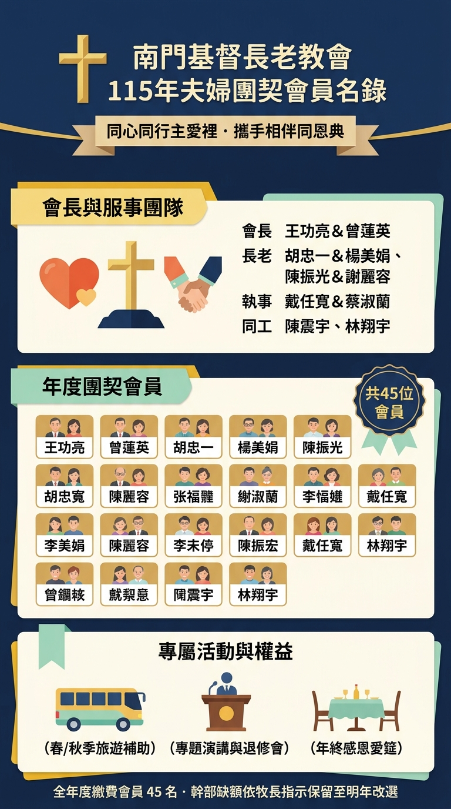

| 編號 | 姓名 | 職務 / 備註 |
|---|---|---|
| 1 | 王功亮 | 會長 |
| 2 | 曾蓮英 | 會長 |
| 3 | 陳振光 | 長老 |
| 4 | 謝麗容 | 契友 |
| 5 | 胡忠一 | 委員幹部 |
| 6 | 楊美娟 | 委員幹部 |
| 7 | 周明顯 | 委員幹部 |
| 8 | 李慧娟 | 委員幹部 |
| 9 | 戴任寬 | 委員幹部 |
| 10 | 蔡淑蘭 | 委員幹部 |
| 11 | 邱春美 | 契友 |
| 12 | 程純健 | 契友 |
| 13 | 林純純 | 契友 |
| 14 | 張翠芬 | 契友 |
| 15 | 廖宜男 | 契友 |
| 16 | 鄭裕謙 | 契友 |
| 17 | 陳美雲 | 契友 |
| 18 | 趙勝雄 | 契友 |
| 19 | 陳麗珠 | 契友 |
| 20 | 施明宏 | 契友 |
| 21 | 徐玉蘭 | 契友 |
| 22 | 胡忠民 | 契友 |
| 23 | 董惠美 | 契友 |
| 24 | 蔡原裕 | 契友 |
| 25 | 楊美惠 | 契友 |
| 26 | 陳寶獅 | 契友 |
| 27 | 梁麗蓁 | 契友 |
| 28 | 程裕信 | 契友 |
| 29 | 張淑慧 | 契友 |
| 30 | 萬明忠 | 契友 |
| 31 | 黃玉珍 | 契友 |
| 32 | 張光寬 | 契友 |
| 33 | 林許秀琴 | 契友 |
| 34 | 張昭正 | 契友 |
| 35 | 黃秀玉 | 契友 |
| 36 | 詹祿卿 | 契友 |
| 37 | 洪春英 | 契友 |
| 38 | 蔡正河 | 契友 |
| 39 | 周民俶 | 契友 |
| 40 | 林翔宇 | 委員幹部 |
| 41 | 陳震宇 | 委員幹部 |
| 42 | 王韻秋 | 契友 |
| 43 | 陳旭照 | 契友 |
| 44 | 林水波 | 契友 |
| 45 | 李麗華 | 契友 |